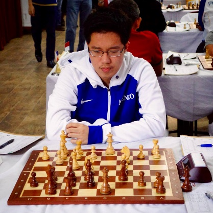

Player Information
Full Name: Jan Emmanuel Garcia
Started Playing Chess: 4 years old
Hometown: Manila City
Skills/Talents other than chess: Tennis, Table Tennis, E-Sports
Affiliation to any other group/team: N/A
Chess Title: International Master
Can one day forever change your life? For International Master Jan Emmanuel Garcia, his destiny took shape in the form of pawns, rooks and bishops when he was only 4 years old.
“My father saw me playing with chess pieces. He taught me how to move the pieces and then enrolled me to the MILO Chess Program.”
In the chess program, he showed great potential winning against bigger and older opponents. When he won the National Chess Championship for children below 10 years old, doors opened for Jan Emmanuel and he grabbed the opportunity to represent the Philippines internationally in his first ever competition abroad held in Thailand.
Achieving so much in the field of chess at a young age, he did not rest on his laurels but instead consistently found more ways to improve his craft. He recounts going to chess clubs, playing against chess masters, analyzing his gameplay and competing against opponents of different backgrounds online after school hours.
“There are a lot of hard work and sacrifices I had to go through before making the National Team.”
Indeed, all his hard work and sacrifices had come to fruition as these enabled him to be a consistent champion in his age bracket. By 2010, the committee took notice of his prowess which led to his inclusion as a youth member in the Philippine National Chess Team.
As a National Chess Team member, he follows a weekly routine of training from Monday to Friday, studying the newest opening trends, middlegame strategies and endgame techniques.
Being a member of the prestigious National Team has its perks and for Jan Emmanuel, his favorite part of becoming a national player is the ability to pursue his passion while earning money and representing the country in international tournaments.
Compared to other parts of the world namely Europe, America and India, there are fewer international tournaments held in the ASEAN region.
Lack of funding possesses a great detriment in the sport as this served as a barrier for him and other players from acquiring the coveted grandmaster title. Addressing the financial issue plaguing chess according to him, will allow players to compete in international tournaments and as well as ease in hiring of international coaches. These said coaches can lend their expertise and train chess players to be better in their chosen sport.
30th SEA GAMES 2019
Currently Jan Emmanuel is a National Team Member and he dabbles in other sports such as tennis, table tennis and e-sports. Apart from his International Master title, his achievements in chess include 2019 Sea Games gold medalist, Asian Indoor and Martial Arts (2017) bronze and silver medalist and champion for Asian youth u16 and u18.
Leave a Reply